Perceptual Distance and the "Generalized Mean Image Problem" ←
Reproducing the "Generalized Mean Image Problem" from section 1.2 Unreasonable Effectiveness of Random Filters in
Understanding and Simplifying Perceptual Distances (Dan Amir and Yair Weiss, in CVPR-2021)
This is useful base research for everything that outputs images which need to be compared against a target image, like, e.g., auto-encoders.
I like the problem setup in the Generalized Mean Image experiment. For my own experiment i took an image and made four crops at pixel offsets (0, 0), (3, 0), (0, 3) and (3, 3). The task is to find ONE image that has the smallest distance to each of the four crops. Please check the experiment setup for details.
I'm almost always using the l1 loss (mean absolute error) for my auto-encoder trainings, mostly because i find the loss values more readable. Also, literature claims that l2 loss (mean squared error) creates rather blurry images, which can be clearly seen in below table.
Now, Perceptual Distance means to pass the source and target images through a neural network before comparing them. The authors do not specify, which loss function they are using for comparison so i'm trying both, l1 and l2. The models CNN1 and CNN2 are described below. The interesting part is, that these models do not have to be trained, they are just randomly initialized.
| original | l1 loss | l2 loss | l1 loss of CNN1 | l2 loss of CNN1 | l1 loss of CNN2 |
|---|---|---|---|---|---|
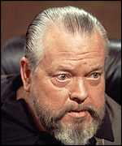 |
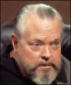 |
 |
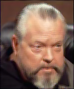 |
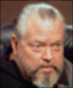 |
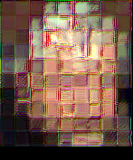 |
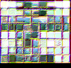 |
|||||
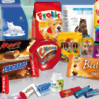 |
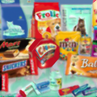 |
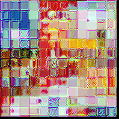 |
The CNN1 model is (in pytorch speak):
nn.Sequential(
nn.Conv2d(3, 32, kernel_size=3),
nn.ReLU(),
nn.Conv2d(32, 32, kernel_size=1),
nn.ReLU(),
)
and CNN2 adds an average pooling layer, as suggested in the paper:
nn.Sequential(
nn.Conv2d(3, 32, kernel_size=3),
nn.ReLU(),
nn.Conv2d(32, 32, kernel_size=1),
nn.ReLU(),
nn.AvgPool2d(32, 16),
)
Below is the code used to create those images (in jupyter lab) followed by a discussion.
Experiment setup ←
def generalized_mean_image(
target_images: torch.Tensor, # B,C,H,W
perceptual_model: nn.Module,
loss_function: Callable,
steps: int = 20000,
batch_size: int = 32,
learnrate: float = 0.005,
device: torch.device = torch.device("cuda"),
):
torch.cuda.empty_cache()
if callable(getattr(perceptual_model, "to", None)):
perceptual_model.to(device)
source_image = nn.Parameter(torch.zeros(target_images.shape[1:]).to(device))
optimizer = torch.optim.Adam([source_image], lr=learnrate)
# create a batch with all target image crops and repeat until batch_size is reached
target_batch = target_images.repeat(batch_size // target_images.shape[0], 1, 1, 1)[:batch_size].to(device)
with torch.no_grad():
p_target_batch = perceptual_model(target_batch)
with tqdm(total=steps) as progress:
for i in range(steps // batch_size):
progress.update(batch_size)
source_batch = source_image.unsqueeze(0).repeat(batch_size, 1, 1, 1)
p_source_batch = perceptual_model(source_batch)
loss = loss_function(p_source_batch, p_target_batch)
optimizer.zero_grad()
loss.backward()
optimizer.step()
progress.set_postfix({"loss": float(loss)})
source_image = source_image.cpu().clamp(0, 1)
display(VF.to_pil_image(source_image))
torch.cuda.empty_cache()
def create_target_images(image: torch.Tensor, o: int = 3):
h, w = image.shape[-2:]
h -= o
w -= o
return torch.cat([
image[None, :, :h, :w],
image[None, :, o:h+o, :w],
image[None, :, o:h+o, o:w+o],
image[None, :, :h, o:w+o],
])
generalized_mean_image(
create_target_images(some_image),
nn.Identity(), # model goes here
loss_function=F.l1_loss,
)
Discussion ←
The authors originally suggest a model that looks like this (if i understood correctly):
nn.Sequential(
nn.Conv2d(3, 1024, kernel_size=3),
nn.ReLU(),
nn.Conv2d(1024, 1024, kernel_size=1),
nn.ReLU(),
nn.Conv2d(1024, 1024, kernel_size=1),
nn.ReLU(),
nn.Conv2d(1024, 1024, kernel_size=1),
nn.ReLU(),
nn.Conv2d(1024, 1024, kernel_size=1),
nn.ReLU(),
nn.Conv2d(1024, 1024, kernel_size=1),
nn.ReLU(),
nn.Conv2d(1024, 1024, kernel_size=1),
nn.ReLU(),
nn.AvgPool2d(32, 16),
)
This model is extremely slow and does not fit into my GPU RAM, when processing images larger than, say 50x50 pixels. From my point of view, it does not make any sense to use a loss method that is computationally orders of magnitudes more expensive than the actual auto-encoder that i'm training. The reason, however, that the authors used such an extreme model, is purely academic. It's used to approximate an infinite random CNN as discussed in Theorem 2.1.
The average pooling at the end does not work in my experiment, as seen in above table. That was my initial guess, when reading the paper and i wonder how it worked for the authors!? Surly, i got something wrong. Later on in the paper, they are comparing images patch-wise (each patch with each other target patch).
However, for untrained random CNNs, the number of channels is quite important. The more you can afford, the better. The color mismatch in above table is directly related to the number of channels.
Influence of number of channels ←
Using the following CNN architecture (where CH is the number of channels in below table):
nn.Sequential(
nn.Conv2d(3, CH, kernel_size=1),
nn.GELU(),
nn.Conv2d(CH, CH, kernel_size=1),
nn.GELU(),
nn.Conv2d(CH, CH, kernel_size=1),
nn.GELU(),
)
| channels | result of 4 random CNNs |
|---|---|
| 4 | 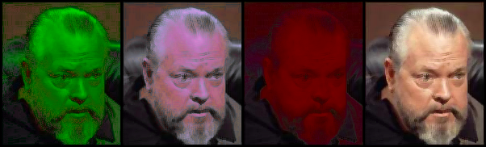 |
| 8 | 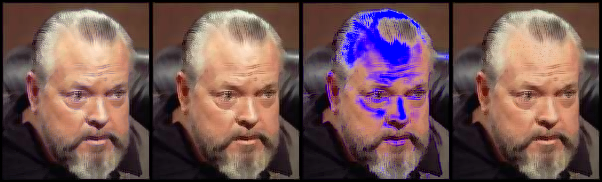 |
| 16 | 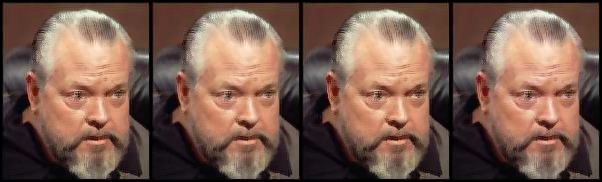 |
| 32 | 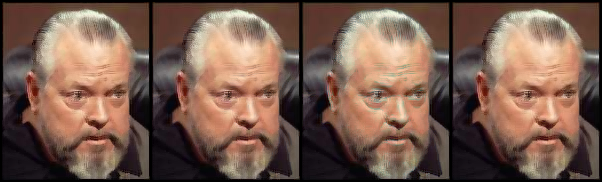 |
| 64 | 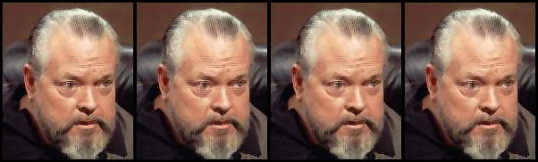 |
| 128 | 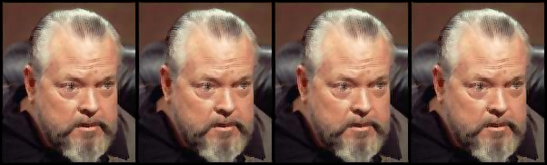 |
As can be seen, too few channels are very unreliable and even 128 channels might introduce some slight color differences.
Unfortunately, that's the limit of my GPU RAM. Running the network with 256 channels on CPU would require about 15 minutes per image. And, of course, increasing the number of channels exponentially increases the training time. On my machine, training with 4 channels runs at about 5100 iterations/second and 128 channels archive only 215 iterations.
Influence of kernel size ←
Checking influence of kernel-size in random CNN. I'm just using one layer and no activation function.
KS is the kernel size:
nn.Conv2d(3, 128, kernel_size=KS, padding=(KS - 1) // 2)
l1 loss without CNN is included for comparison:
| original | l1 loss | l1 of KS 1 | l1 of KS 3 | l1 of KS 5 | l1 of KS 7 | l1 of KS 9 |
|---|---|---|---|---|---|---|
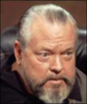 |
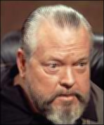 |
|||||
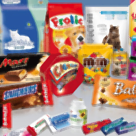 |
It's really hard to tell but, in my opinion, a kernel size of 1 yields the most sharp images and everything above 3 does not produce a noticeable difference.
Comparing the Fourier Transform ←
Instead of comparing the images or their representations of random CNNs, let's compare the frequency spectrum of the images.
The previous l1 and l2 loss images are included for comparison:
| original | l1 loss | l2 loss | l1 loss of FFT1 | l1 loss of FFT2 | l2 loss of FFT2 |
|---|---|---|---|---|---|
|
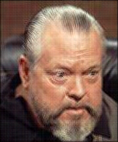 |
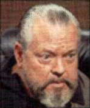 |
|||
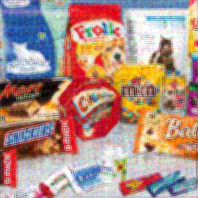 |
FFT1 is the torch.fft.fft2 (2-dimensional) function which transforms the image
into complex numbers. Complex numbers are not supported by the l2 loss, so FFT2 is an adaption:
def fft_func(x):
x = torch.fft.fft2(x)
return torch.concat([x.real, x.imag], dim=-3)
It ignores if numbers are real or imaginary and simply concatenates the spectral images along the channel (color) dimension.
Using the Fourier Transform increases training time until convergence. FFT1 a little and FFT2 needs at least 10 times the training time for convergence and does not look very good with l1 loss.
Using the l1 loss on the complex FFT numbers, however, does a really good job.
Since we have the frequency spectrum of the images, we can manipulate it in some way before comparison. I tried to multiply high frequency components to make them more effective in the comparison but whatever i tried, it did not increase the resulting image quality compared to the normal FFT.
Just for fun, let's look at the resulting images when only the low or high frequencies are compared
def fft_func(x):
x = torch.fft.fft2(x)
return x[..., :10, :10] # for low frequencies
return x[..., 10:, 10:] # or this for high frequencies
| original | low | high |
|---|---|---|
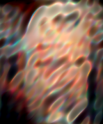 |
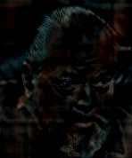 |
|
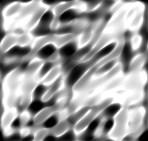 |
||
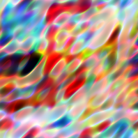 |
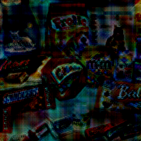 |